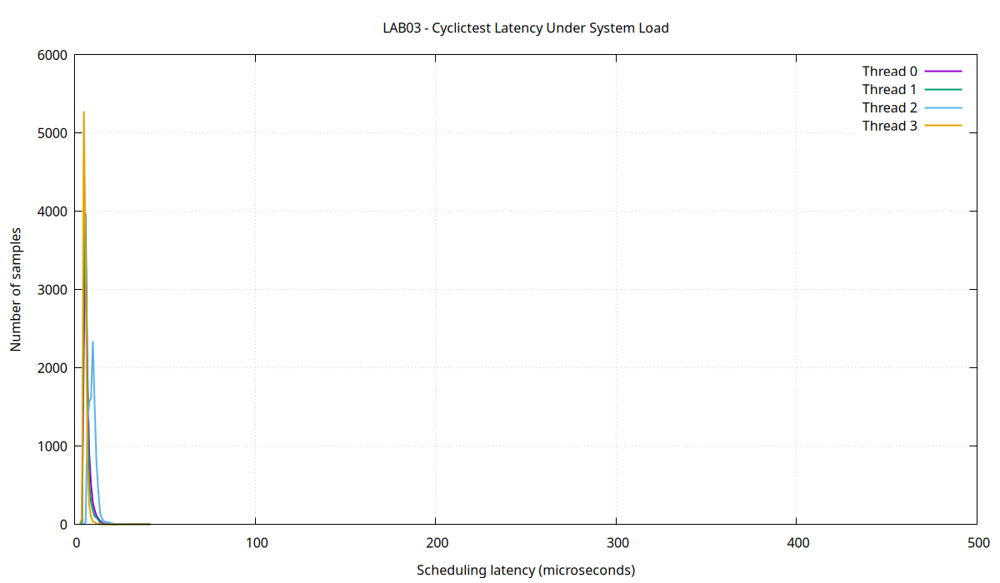

| Student | Phan Dang Ai Truc |
|---|---|
| Student ID | SE201700 |
| Date | 2026-10-20 |
| Target | ARMv7 – QEMU Versatile Express Cortex-A9 |
| Kernel | Linux 5.15.0 |
The ARM executable was compiled with debug symbols and executed by qemu-arm. gdb-multiarch connected to the QEMU GDB stub through TCP port 1234.
OOB_EVIDENCE: i=5 len=5 UAF_EVIDENCE: buf_after_free=0x75c50 OVERFLOW_32BIT_RESULT=1410065408 EXPECTED_64BIT_RESULT=10000000000 [Inferior 1 (process 13582) exited normally]
The loop used the condition i <= len. For an array containing five elements, valid indexes are 0 through 4. GDB showed i=5 and len=5, proving that data[5] was accessed outside the array. The condition was corrected to i < len.
create_message() freed its allocated buffer before returning the pointer. The address could still contain the original text, but its lifetime had already ended. The free operation was removed from create_message(), and the caller now frees the message after use.
Multiplying 100000 by 100000 requires the value 10000000000, which cannot be represented by a signed 32-bit integer. The 32-bit result was 1410065408. The fixed implementation converts an operand to long long before multiplication.
Sum = 150 Message: Hello Embedded Linux calculate(100000, 100000) = 10000000000 BUGGY_APP_FIX_VALIDATION=PASSED
==12430== in use at exit: 16,900 bytes in 250 blocks ==12430== total heap usage: 352 allocs, 102 frees, 21,124 bytes allocated ==12430== definitely lost: 16,900 bytes in 250 blocks ==12430== indirectly lost: 0 bytes in 0 blocks ==12430== possibly lost: 0 bytes in 0 blocks ==12430== ERROR SUMMARY: 3 errors from 3 contexts (suppressed: 0 from 0)
The leaked memory consisted of 2,000 bytes from score arrays, 2,100 bytes from record names, and 12,800 bytes from message buffers. The total definite leak was therefore 16,900 bytes in 250 blocks.
==12448== in use at exit: 0 bytes in 0 blocks ==12448== total heap usage: 352 allocs, 352 frees, 21,124 bytes allocated ==12448== All heap blocks were freed -- no leaks are possible ==12448== ERROR SUMMARY: 0 errors from 0 contexts (suppressed: 0 from 0)
After restoring free() for the name, scores and message buffers, the number of allocations equaled the number of deallocations. Valgrind reported no remaining leak.
/ # echo "LEAKY_PID=$PID" LEAKY_PID=74 > 'Name|VmSize|VmRSS|VmData|VmStk' \ VmSize: 628 kB VmRSS: 4 kB VmData: 152 kB VmStk: 132 kB / # echo "LEAKY_EXIT=$?" LEAKY_EXIT=0
The procfs status interface provided the process virtual memory, resident memory, data-segment and stack measurements while the ARM application was running inside QEMU.
% time seconds usecs/call calls errors syscall ------ ----------- ----------- --------- --------- ---------------- 43.61 0.000420 420 1 execve 18.48 0.000178 12 14 mmap 14.23 0.000137 45 3 munmap 5.40 0.000052 13 4 mprotect 3.01 0.000029 0 75 write 3.01 0.000029 7 4 openat 2.49 0.000024 4 5 fstat 1.97 0.000019 6 3 brk 1.45 0.000014 3 4 close 1.25 0.000012 6 2 read 1.14 0.000011 5 2 pread64 0.73 0.000007 7 1 1 access 0.73 0.000007 7 1 getrandom 0.62 0.000006 6 1 prlimit64 0.52 0.000005 5 1 arch_prctl 0.52 0.000005 5 1 rseq 0.42 0.000004 4 1 set_tid_address 0.42 0.000004 4 1 set_robust_list
strace observes transitions between user space and kernel space. The main calls included execve for program startup, mmap and munmap for memory mappings, write for output, and openat for file access. The reported access error was a normal library or loader capability probe.
# Total Lost Samples: 0
# Samples: 48 of event 'cpu-clock'
| |--45.83%--heavy_compute
| |--39.58%--__ieee754_log_fma
| |--10.42%--log@plt
--2.08%--linear_search
| |--45.83%--heavy_compute
| |--39.58%--__ieee754_log_fma
| |--10.42%--log@plt
--2.08%--linear_search
| |--45.83%--heavy_compute
| |--39.58%--__ieee754_log_fma
| |--10.42%--log@plt
--2.08%--linear_search
| |--45.83%--heavy_compute
| |--39.58%--__ieee754_log_fma
| |--10.42%--log@plt
--2.08%--linear_search
|--45.83%--heavy_compute
|--39.58%--__ieee754_log_fma
|--10.42%--log@plt
45.83% 45.83% perf_target perf_target [.] heavy_compute
heavy_compute
39.58% 39.58% perf_target libm.so.6 [.] __ieee754_log_fma
__ieee754_log_fma
perf identified heavy_compute and the logarithm implementation as the main CPU hotspots. This differs from strace because perf samples CPU execution inside user-space functions, whereas strace measures system calls made to the kernel.
# Min Latencies: 00003 00003 00005 00003 # Avg Latencies: 00006 00006 00009 00005 # Max Latencies: 00022 00023 00042 00027 # Histogram Overflows: 00000 00000 00000 00000

The test used four real-time threads with priority 80 while stress-ng generated CPU, memory and I/O load. The generic Ubuntu kernel produced low average latency but occasionally showed larger maximum-latency spikes. For real-time systems, the maximum value is more important than the average because it represents the worst observed scheduling delay.
Out-of-bounds access and use-after-free invoke undefined behavior. Undefined behavior does not guarantee a crash. The invalid address may still be mapped and the freed data may not yet have been overwritten.
The target process is controlled by a small debug stub. The host GDB loads the executable symbols and communicates with that stub through a remote protocol. GDB requests register values, memory contents, breakpoints and execution control from the target.
Definitely lost means that allocated memory remains active but no valid pointer to its allocation is available. Consequently, the program can no longer release that memory.
strace measures kernel-facing system calls. perf statistically samples the CPU instruction pointer, so it can identify computationally expensive user-space functions that make few or no system calls.
cyclictest measures the difference between the requested wake-up time and the actual time at which a real-time thread runs. This delay includes scheduler, interrupt and kernel-preemption effects.
The lab demonstrated a complete embedded Linux diagnostic workflow. GDB located three correctness problems, Valgrind verified elimination of all heap leaks, strace characterized system-call behavior, perf located CPU-intensive functions, cyclictest measured scheduling latency, and the corrected ARM applications were packaged into a validated initramfs.